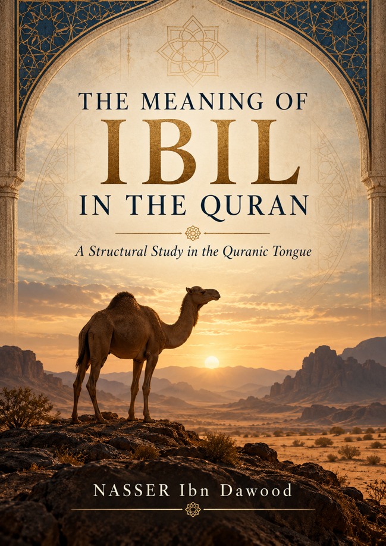

Nasser Ibn Dawood

Text extracted from the author-supplied Word edition; consult the original source.
Preparing the reader…
THE MEANING OF IBIL
IN THE QUR’AN
◆
A Structural Study in the Fiqh of the Qur’anic Tongue
Condensed Conceptual English Edition
Nasser Ibn Dawood
Fiqh of the Qur’anic Tongue — Engineering of Revelation
Open Access Edition
About This Edition
This volume is a condensed conceptual adaptation of the author’s Arabic study. It preserves the central argument, methodological controls, major tests, and final claim-statuses while omitting most of the exhaustive laboratory records, repeated audit tables, extended lexical debates, and internal project documentation of the Arabic edition.
The Qur’anic term ibil is retained in analytical passages because the book distinguishes the Qur’anic word from the wider zoological category and from other Qur’anic camel-related terms such as nāqah, baʿīr, and jamal. In ordinary explanatory prose, “camel” or “camels” is used when no lexical ambiguity arises.
Qur’anic references are given by sūrah name and verse number. English renderings of verses in this edition are conceptual translations prepared for readability rather than quotations from a published English translation.
I. The Global Knowledge Manifesto
Knowledge is a universal right. The author firmly believes that wisdom should not be locked behind paywalls or language barriers.
Global Access Policy: All books in this library are available for free in multiple digital formats (PDF, HTML, DOCX, TXT).
The Digital Library: As of early 2026, the collection hosts 68 volumes (34 in Arabic and 34 in English), fully optimized for AI-assisted research and digital archiving.
Official Platforms: Main Website: nasserhabitat.github.io/nasser-books/
GitHub: nasserhabitat/nasser-books
II. Translator’s Note: The Bridge of Meaning
This English edition is a condensed conceptual adaptation. It is not a word-for-word translation, but rather an "extraction of essence." It presents the core philosophical framework in accessible English, omitting the exhaustive linguistic debates and classical references found in the original Arabic text.
For the academic researcher: The original Arabic version remains the primary source for comprehensive linguistic analysis, detailed exegesis (Tafsir), and the complete bibliography.
Contents
Preface — Why This Book Begins with Restraint
1. The Research Problem: Meaning Before Assumption
2. The Direct Corpus of Ibil
3. Sūrat al-Ghāshiyah: The Architecture of Seeing
4. From Outcome to Observation, Reminder, and Accountability
5. Why Ibil and Not Nāqah, Baʿīr, or Jamal?
6. Why Camels and Not Sheep, Goats, or Cattle?
7. Camel, Sky, Mountains, Earth: From Network to Restraint
8. The Mathānī Layer: Useful, but Governed by Context
9. Biology: External Robustness, Not Internal Proof
10. What the Study Establishes, Rejects, and Leaves Open
11. The Reader as Researcher
12. A Short Glossary of Methodological Terms
13. Conclusion: From the Camel to a Discipline of Reading
Preface — Why This Book Begins with Restraint
This book begins with a deceptively simple question: what does the Qur’anic word ibil mean when it appears in the verse, “Do they not look at the camels—how they were created?” (al-Ghāshiyah 88:17)?
The inherited answer is immediate: ibil means camels. The present study does not begin by rejecting that answer. It begins by asking a different kind of question: what can actually be established from the Qur’anic corpus itself, what function does the word perform in each context, what alternative hypotheses fail under testing, and where must inquiry remain open?
The result is not a symbolic redefinition of the camel, nor a zoological celebration, nor a claim that the Qur’an hides one secret code behind the word. It is a methodological study in how meaning is produced by the text through context, contrast, recurrence, selection, and structural placement.